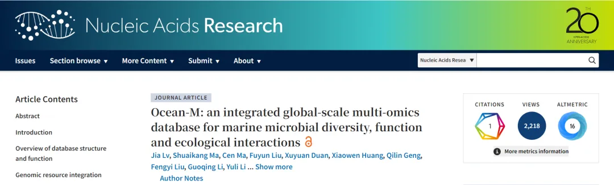
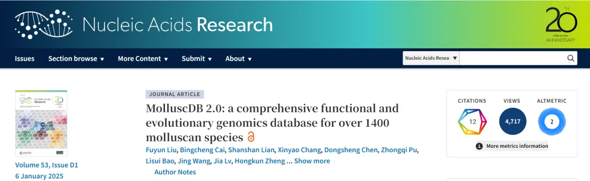
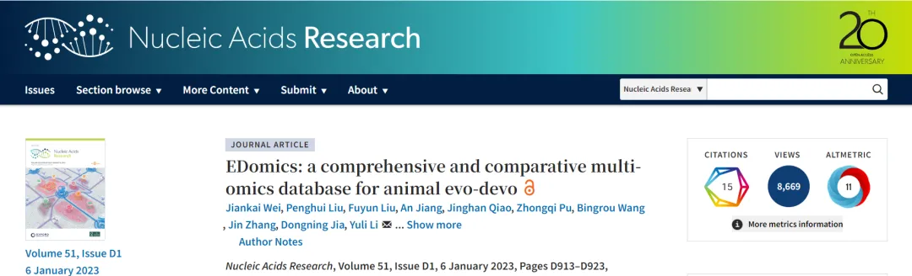
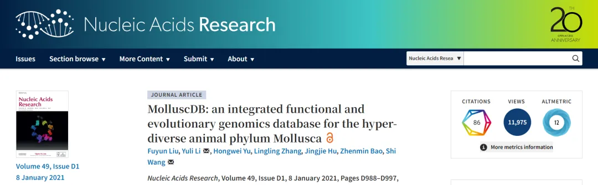
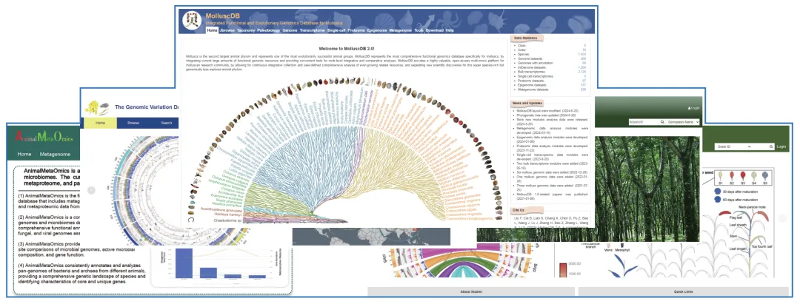
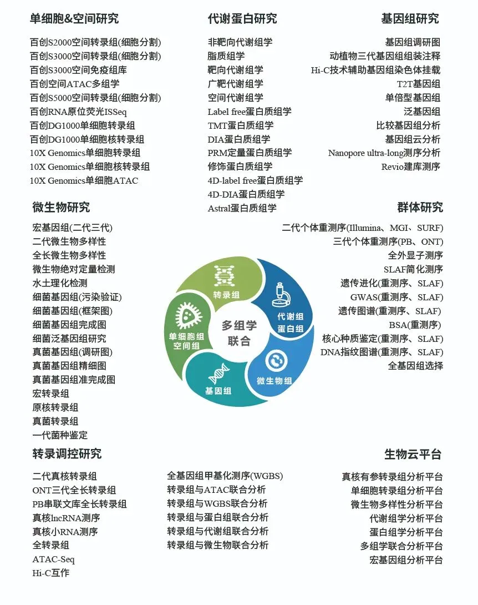
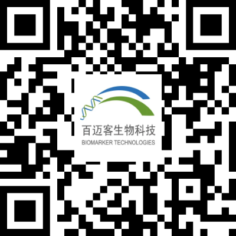

5年连发4篇《NAR》，中国海洋大学团队打造全球领先生物组学数据库！
原文：https://mp.weixin.qq.com/s?__biz=MzAwMzIzOTk5OQ==&mid=2247534604&idx=1&sn=b905bcbbb1614e23b788d552248ce8f2&chksm=9b3c315cac4bb84ac6d1333dacab3c56c596ca55927838245478909c3d5b151d8fbba436697d#rd 合集：文献速递
在生物信息学与海洋生命科学的交叉领域，中国海洋大学的科研团队正以硬核实力书写着 “中国创新” 的答卷 —— 海洋生物遗传学与育种教育部重点实验室包振民院士、王师教授团队，联合海洋生物多样性与进化研究所董波教授团队，仅用5年时间便在国际顶级期刊《核酸研究》（Nucleic Acids Research）连发4篇重磅数据库论文，成功打造覆盖海洋微生物、软体动物、动物进化发育三大核心领域的多组学数据库平台，让中国在全球生物组学资源整合与创新领域占据重要一席之地！
从国际首个软体动物综合基因组数据库，到横跨整个动物界的进化发育组学平台，再到全球最全面的海洋微生物多组学数据库，每一个数据库的诞生都填补了领域空白，每一次顶刊发声都彰显着中国科研的硬实力。
今天我们重点解读这4篇数据库核心研究，剖析其科学思路与学术价值，为数据库领域研究者提供借鉴。
Ocean-M： 全球海洋微生物综合多组学资源数据库
** **
2025年10月31日， 海洋生物遗传学与育种教育部重点实验室包振民院士和王师教授团队在国际生物信息数据库领域知名期刊Nucleic Acids Research（《核酸研究》）发表了题为“Ocean-M: an integrated global-scale multi-omics database for marine microbial diversity, function and ecological interactions”（面向全球格局的海洋微生物综合多组学资源数据库—Ocean-M）的论文，正式发布了面向全球格局的海洋微生物综合多组学资源数据库—Ocean-M。
百迈客生物为该研究提供了数据库搭建服务！

该研究开发了Ocean-M（https://om.biocloud.net/home），Ocean-M数据库整合了全球多生境、多尺度的海洋微生物多组学数据，成为海洋微生物研究领域最全面的开放获取数据库。
平台汇集了来自全球不同海洋生态系统的57,000余个微生物数据，涵盖宏基因组、宏转录组、宏蛋白质组、宏代谢组等多个层次，样本涵盖了从极地到赤道、从表层到深海的完整生态梯度。通过统一的数据处理和标准化标识符，Ocean-M整合了规模最大的宏基因组（MAGs）数据，包含超过50,000个代表性微生物基因组数据，支持全球范围内微生物群落结构、功能特征及其空间分布的可视化展示。
Ocean-M构建了基于全息组学的生态网络分析框架，整合了微生物群落网络、宿主-微生物组互作及环境DNA数据集，能精确描述查询微生物群落结构、功能特征及其生态位相互关系，实现了生态互作的全维度分析，为生态学研究提供了全新的视角和工具。
同时，搭建了“基因组-基因功能-生态偏好”三位一体的系统分析框架，通过大规模的功能基因挖掘，建立了包含百万级功能基因集合，为微生物功能基因的挖掘和生态系统功能解析提供了强有力的支持。
此外，团队在前期开发的微生物精准鉴定方法2bRAD-M的基础上，打造了超5万海洋微生物组装基因组（MAGs）的特异性2b-RAD标签库，可鉴定物种达95%以上，为复杂海洋环境中微生物的精准识别和分类提供解决方法。
Ocean-M不仅为海洋微生物学、生态学等基础科学研究提供了强大的数据支持，还为海洋生物资源开发和生物技术创新等领域提供了宝贵的数据资源。
MolluscDB 2.0：软体动物的综合功能与进化基因组学数据库
** **
2024年 11月12日，中国海洋大学“海洋生物遗传学与育种”教育部重点实验室包振民院士和王师教授团队在国际生物信息数据库领域顶级期刊Nucleic Acids Research在线发表了国际上迄今最大规模的软体动物功能和进化基因组学综合数据库“MolluscDB 2.0: a comprehensive functional and evolutionary genomics database for over 1400 molluscan species”（MolluscDB 2.0：面向超过1400个软体动物种类的功能和进化基因组学综合数据库）。
百迈客生物为该研究提供了数据库搭建服务！

软体动物门是仅次于节肢动物门的第二大动物门，但在基因组学方面仍然研究较少。随着高质量基因组和多样化功能基因组数据的增加，我们有望加深对软体动物生物学和进化的理解。
为了应对软体动物研究社区在管理庞大多组学资源方面的机遇与挑战，该研究开发了MolluscDB 2.0（http://mgbase.qnlm.ac），该平台整合了广泛的功能基因组数据，并提供用户友好的多层次整合与比较分析工具。MolluscDB 2.0涵盖了来自软体动物八个纲的1450个物种，并汇编了约4200个数据集，是目前最全面的软体动物多组学资源。MolluscDB 2.0扩展了多组学数据的层次，包括基因组、整体转录组、单细胞转录组、蛋白质组、表观基因组和宏基因组。此外，MolluscDB 2.0将功能模块和分析工具的数量增加了一倍多，更新了14个原有模块，并新增了20个专门的模块。
总体而言，MolluscDB 2.0为软体动物研究社区提供了一个高度有价值的开放访问多组学平台，促进了科学发现，深化了我们对软体动物生物学和进化的理解。
EDomics： 横跨动物界的进化发育组学数据库平台
** **
2022年11月1日， 海洋生物多样性与进化研究所董波教授团队和海洋生命学院王师教授团队联合在国际分子生物学领域顶级期刊Nucleic Acids Research在线发表 “EDomics: a comprehensive and comparative multi-omics database for animal evo-devo "(http://edomics.qnlm.ac)，标志着国际上首个横跨整个动物界主要进化节点类群的发育进化相关多组学数据库和综合分析平台的成功建立和正式启用。

该研究收集整合了横跨整个动物界的传统模式生物和新兴模式生物大量的基因组、转录组、单细胞和空间转录组数据资源，建立了统一标准，对多物种海量数据进行了归类处理，打通了跨物种多组学数据比较分析瓶颈技术难题，构建了国际首个动物进化发育多组学综合数据库平台（EDomics,http://edomics.qnlm.ac）。EDomics数据库代表了迄今最全面和综合的发育进化多组学资源，囊括整个动物界主要类群的代表性物种，包括来自21个主要动物门类的40个高质量基因组和1010个bulk转录组，以及68个单细胞转录组（涵盖来自12个广泛研究物种的429种细胞类型）。所包含的物种涵盖了主要的发育特性和进化节点，包括胚层的出现和分化、辐射对称和两侧对称的形成、原口动物到后口动物的过渡、水生到陆生以及无脊椎动物到脊椎动物的转变等。
EDomics数据库能够对整个动物界的基因组学和转录组学信息进行系统的进化发育维度展示，并提供极具价值、独特的平台来描述发育过程的主要转变和生物进化中的创新性变化。EDomics的建立将为国际动物进化和发育学界提供一个物种覆盖度最广、组学资源最丰富、分析功能最全面的开放获取数据库平台，实现对迅猛增长的evo-devo海量组学资源的系统整合和深度分析，以助推生命科学领域的创新发现和重大突破，最终描绘出整个生命之树的发展演变的全貌。
MolluscDB：软体动物超大类群基因组数据库
** **
2020年 10月23日，中国海洋大学海洋生物遗传学与育种教育部重点实验室包振民院士团队在国际数据库领域顶级期刊Nucleic Acids Research（《核酸研究》）在线发表了国际首个软体动物综合基因组数据库“MolluscDB: an integrated functional and evolutionary genomics database for the hyper-diverse animal phylum Mollusca”（MolluscDB：系统整合功能和进化组学资源的软体动物超大类群基因组数据库）。
百迈客生物为该研究提供了数据库搭建服务！

该研究开发了一个软体动物超大类群基因组数据库MolluscDB（http://mgbase.qnlm.ac/home），该数据库收集并整合了近1000份组学数据资源，包括20个高质量的参考基因组，538个转录组和409个线粒体基因组。组学数据来自123个物种，涵盖了软体动物门全部7个纲和53个目中的87%，地理分布覆盖从陆地、淡水、近海到深海，囊括了已公开的绝大部分软体动物组学资源。
MolluscDB提供多达10种的基础性组学分析，包括基因组组装信息、系统演化关系、古老化石记录、基因序列及结构、基因功能注释、发育时期/成体组织表达谱、基因家族、转录因子和转座子等。通过开发定制的基因组浏览器，实现了复杂基因组信息的便捷可视化。
针对软体动物的基因组特征和生物学特性，MolluscDB还提供了满足特定研究需要的定制数据集和分析工具，包括发育和成体基因共表达网络、软体动物祖先及其分演类群的核心基因集、基因组宏观共线性分析等。
MolluscDB提供了一个系统全面的软体动物基因组数据库平台，该平台将使软体动物研究领域能够应对并充分利用日益增长的海量组学资源，从而加快重要基因资源发掘，推动认知海洋生物独特生命过程的遗传演化规律，也为贝类遗传育种工作提供了有力的支持。
从软体动物的遗传演化到海洋微生物的生态互作，从动物界的进化节点到多组学资源的系统整合，这4个数据库不仅为基础科研提供了强大的数据支撑，更在海洋生物资源开发、生物技术创新、遗传育种等应用领域埋下了 “创新种子”。
5年深耕，4篇顶刊，中国海大团队用坚持与专注，搭建起通往生命奥秘的 “数据桥梁”，既彰显了中国在生物信息数据库领域的引领地位，也为全球生命科学研究注入了源源不断的 “中国动力”。
未来，期待该团队继续以科研为刃，以创新为翼，在更多前沿领域取得突破，也期待这些数据库能赋能更多科研工作者，催生更多改变世界的科研成果。
百迈客生物：打造您专属的
“顶级期刊级”研究数据库
百迈客生物深耕领域多组学数据库建设，依托四大核心能力已为众多科研机构与高校提供从数据存储到分析挖掘的全流程解决方案并已成功应用，取得了显著的研究成果。无论是物种保护、生态监测还是遗传育种，我们的数据库都为其提供了强有力的数据支持，助力科研人员攻克一个又一个科学难题。
**完善的功能体系 **
数据库提供全面的基础分析功能+强大的定制化模块，整合多组学、多维度数据，打破信息孤岛，赋能系统性研究。
**15年深厚积淀 **
拥有15年大数据开发与挖掘经验深度积累，深刻理解领域需求与挑战。
**先进开发流程 **
采用云原生架构与DevOps全自动化流程，严格的质量保障体系确保数据安全与分析可靠性，支持私有化/云端灵活部署。
顶级期刊成功经验
拥有在园艺顶刊、分子生物/化学顶刊（JCR Q1，中科院一/二区）发表多篇数据库论文的成熟经验。

部分合作案例如果您对领域多组学数据库感兴趣扫描下方二维码可预约获取一对一数据库方案讲解~
百迈客生物服务与产品

扫码 | 联系我们
欢迎长按识别下方二维码联系我们。

更多平台
bilibili
视频号
知乎号
小红书
关 于百迈客生物：
北京百迈客生物科技有限公司(简称：百迈客生物)成立于2009年，是一家提供基因多组学测序服务和单细胞组学&空间组学仪器设备的高新技术企业。业务主要包括科技服务、智能制造两大业务板块。全球化的业务布局，在中国、欧洲等地区拥有以博士和硕士为主体的研发及服务团队，先后在 Cell、Nature、Science 等国际期刊上发表文章数千篇，累计影响因子超万分。拥有MGI、GeneMind、 Illumina、 PacBio、Nanopore、AB SCIEX、Waters、BMKMANU、10X等二代测序、三代测序和质谱检测平台，自主创新的百灵实验室全自动生产线、BMKCloud多组学大数据智能交付平台及亚细胞级S系列空间组学产品，为全球科研单位、育种机构、医药公司等提供高品质基因多组学服务和产品。